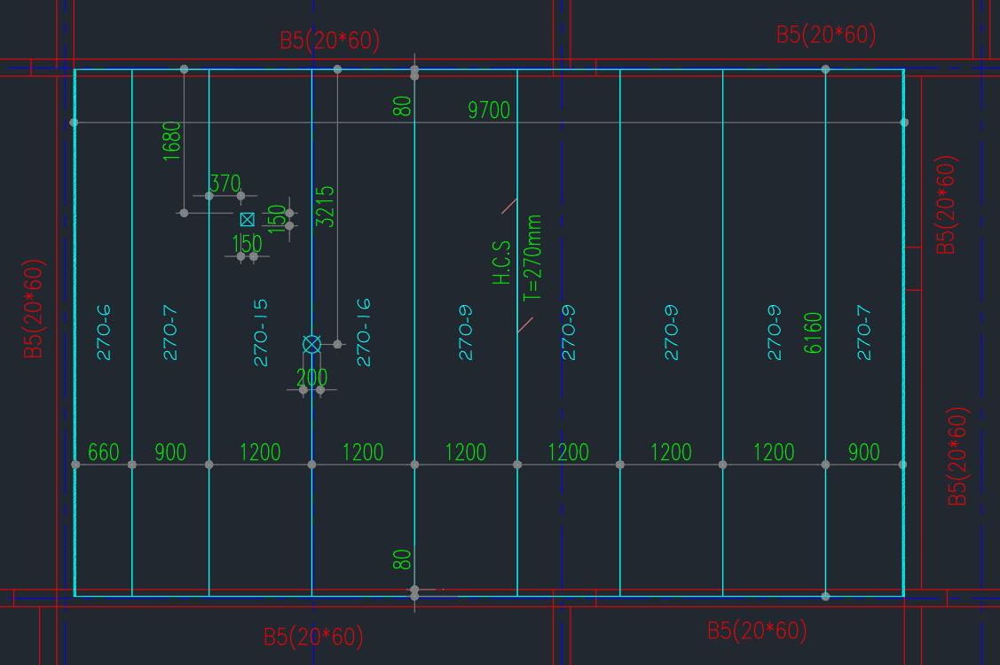
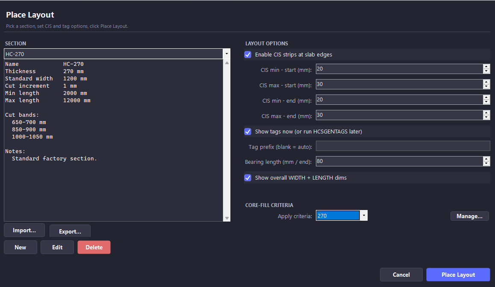
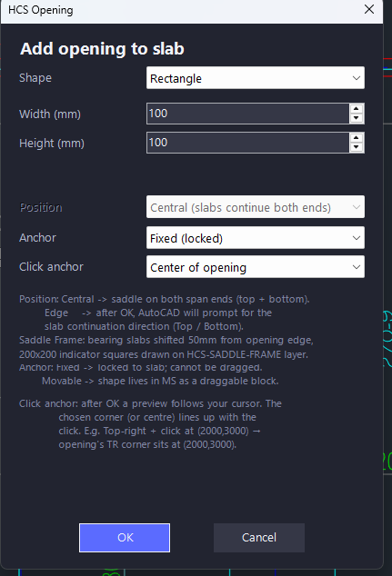
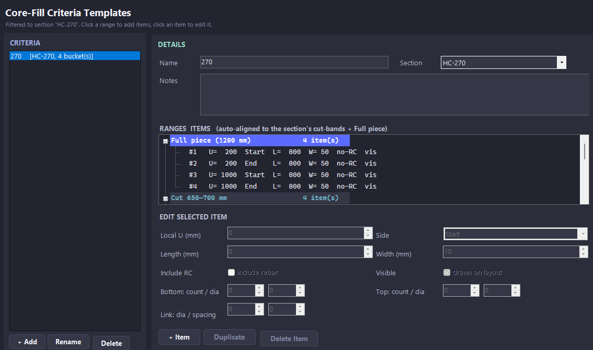
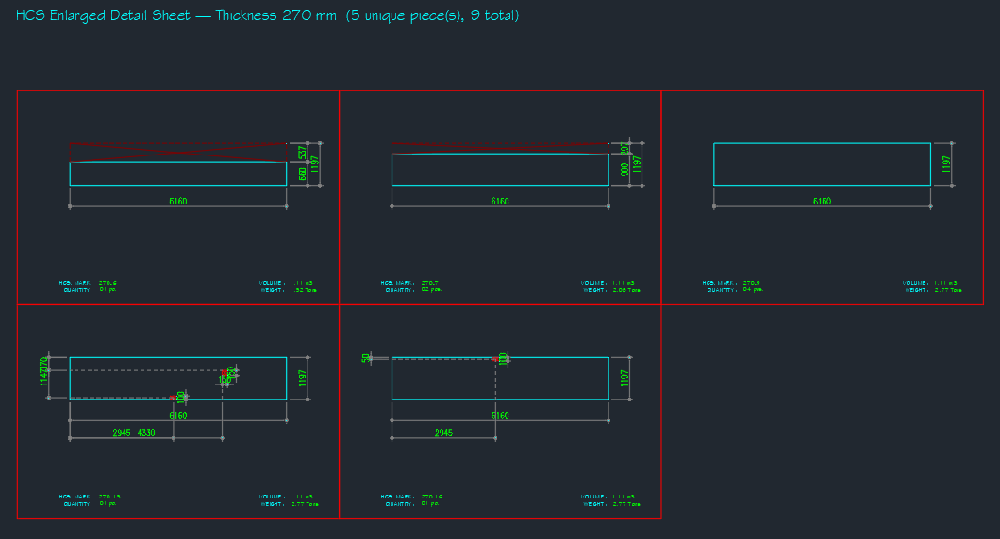
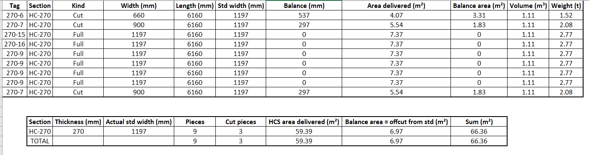

HollowCoreSlab Plugin for AutoCAD
Parametric automation for precast hollow-core slab layouts. Pick a section, drag a rectangle, and place a fully tagged and dimensioned layout — with openings, core-fills, shop drawings, and BOQ export — from one source of truth. Compatible with AutoCAD 2021, 2022, 2023, and 2024.
Watch the Plugin in Action
Forty seconds of real AutoCAD usage — pick a section, drag a rectangle, place layouts, add an opening, generate tags, render the shop drawing. All from one workflow, one source of truth.
HollowCoreSlab — full workflow demo: layout, openings, tags, and shop drawings in one command. | Watch on YouTube
Real Output, Real Production Workflow
Every command in HollowCoreSlab targets a real bottleneck in precast slab drafting: the manual placement of pieces, the band-rule arithmetic for cut widths, the trimming of edges around openings, and the redundant re-keying of quantities into Excel. The image below shows a layout placed and committed in a single command, complete with full pieces, cut pieces, CIS infill, two opening shapes, element tags, and dimensions.

Real AutoCAD output: nine pieces, two openings, CIS infill, dimensions and tags — all generated in a single HOLLOWCORESLAB command.
Capabilities
- Section Library
-
Manage every hollow-core section your factory casts in a JSON-backed library shared across drafters: thickness, standard width, joint clearance, cut bands (min/max), cut increment, and length range. The solver enforces the factory's producible cut widths automatically — it will not pick anything outside your bands.
- Live Layout Placement
-
Pick a section, set CIS strip ranges, attach a core-fill criteria template, and drag a rectangle to define the resting area. A live preview shows the proposed layout as you drag, turning red when the current rectangle is infeasible for that section and CIS combination. One click commits the layout with every piece, dimension, and tag in place.
- Openings — Rectangle and Circle
-
Place rectangular or circular openings on a slab. Piece edges within the opening footprint auto-trim; aligned dimensions to the surrounding piece edges are placed automatically and remain editable via standard AutoCAD grips. The plugin remembers any manual dimension shifts across rebuilds.
- Core-Fill Templates with Reinforcement
-
Define core-fills per piece, or define section-keyed criteria templates that auto-apply to every Full and Cut piece across every layout — bands grouped by cut-width range. Reinforcement (top, bottom, link diameter and spacing) renders as an annotation in the detail sheet, e.g. "Bot 2T16 / Top 2T12 / Stp T8@200".
- Element Tags Locked Across the Drawing
-
Generate global element tags across every layout in the drawing using one consistent numbering scheme. Once locked, the same piece identity reuses the same tag number across rebuilds, ensuring shop drawings and BOQ stay in sync.
- Shop Drawings and BOQ Export
-
One command renders an enlarged detail sheet of every unique piece type with cell-grid layout, dimensions, mark, quantity, volume, and weight. Another command exports a complete Bill of Quantities plus area summary as an XLSX, ready to attach to a submission. Both reuse the same layout data, so editing the layout updates everything.
The Place Layout Dialog
The single entry point for every new slab. Manages your section library, CIS strip options, tag preferences, and core-fill criteria templates in one screen — no hunting through nested menus.

Openings with Auto-Trim and Dimensions
Every opening you place trims the surrounding piece edges automatically and emits its own aligned dimensions. Edit later by re-opening the dialog — the trim and dim updates re-flow.

Core-Fill Criteria Templates
Define section-keyed reinforcement rules once, attach them to a layout, and every Full and Cut piece picks up the right core-fill automatically. Manual fills coexist with templated fills and survive rebuilds.

Shop Drawings
Cell-grid detail sheet, one cell per unique piece type. Auto-dimensioned, annotated with HCS Mark, Quantity, Volume, and Weight. Total Quantity sits on its own toggle-able layer so partial-scope sheets can hide it cleanly.

Bills of Quantities — XLSX Export
HCSEXPORTBOQ writes the BOQ directly to XLSX and opens it in Excel — no save prompt. Includes a pieces table (Tag, Section, Kind, Width, Length, Std Width, Balance, Area Delivered, Balance Area, Volume, Weight) and a section summary (Pieces, Cut pieces, HCS area delivered, Balance, Sum).

Specifications
| Host application | AutoCAD 2021, 2022, 2023, 2024 (Windows, x64) |
| Runtime | .NET Framework 4.8 (preinstalled with AutoCAD) |
| Installation | Drop bundle into ApplicationPlugins, restart AutoCAD |
| Activation | Per-machine license file, offline-validated |
| Network | Required only at activation; works fully offline after |
| Data persistence | Drawing-resident; no cloud upload, no telemetry |
| Updates | Free updates within the major version, by email |